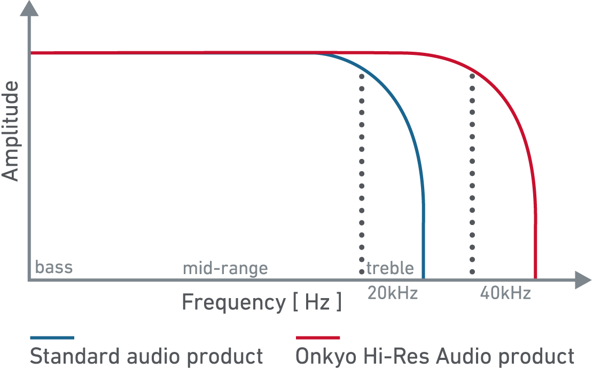
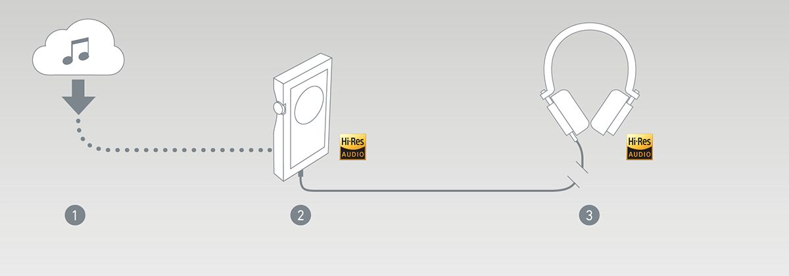
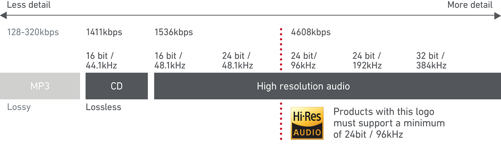
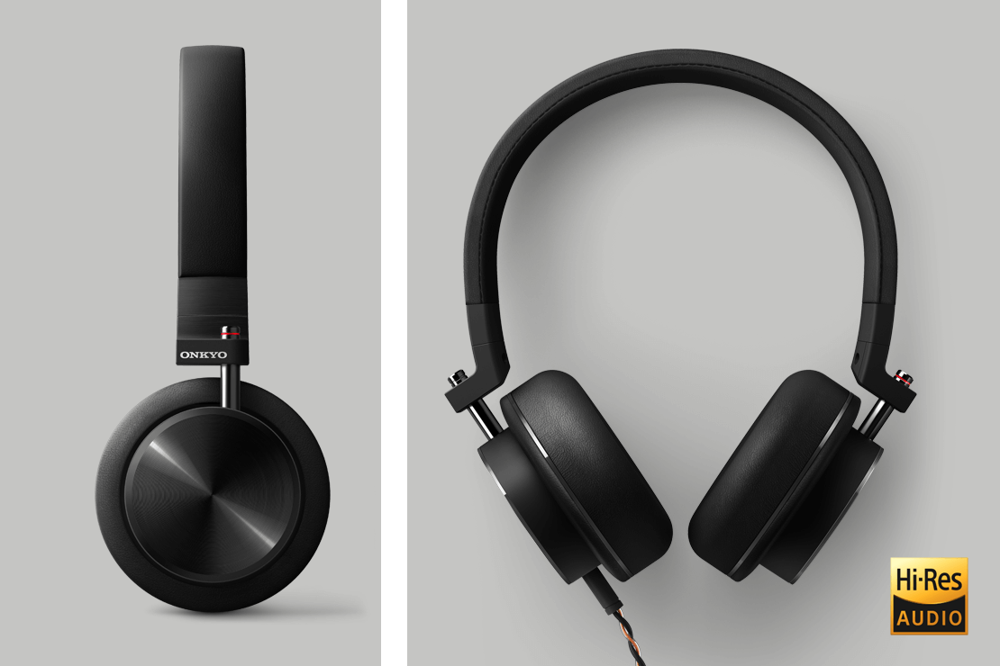

Onkyo Hi-Res Audio
Art direction of consumer website and marketing assets
Onkyo required a web page to help consumers understand how Hi-Res Audio works and help them select which Onkyo products where right for them.
We created all graphics and text content, as well as art directing the overall site structure. The site was well received.
   